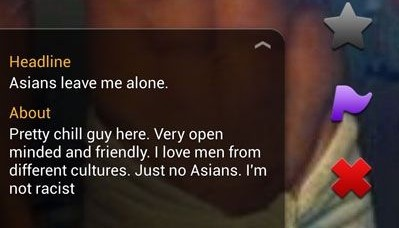

My User's Keeper: The Role of Ethics in Human-Computer Interaction

Human-Computer Interaction
Are developers responsible for protecting individuals if their creations become problematic?
|  |  |
"There are many things we allow in the dating sphere that aren’t acceptable in the rest of our day-to-day lives. Being ghosted. Not splitting a bill.
When it comes to trying to find love, though, we’re incredibly forgiving. To the point where we can even find ourselves glossing over or excusing racial prejudice that would be balked at anywhere else."
(Lothian-McLean, Moya. “'I Have a Thing for Mixed-Race Girls...' How Modern Dating Encourages Racial Prejudice.” BBC News, BBC, 15 Nov. 2018, www.bbc.co.uk/bbcthree/article/50bf662a-c48c-4201-b2de-c575b14f6645.)
"There, I was finally able to find real trans people of my generation, real peers, and the sense of recognition was shocking. For the first time, through the posts of other users, I was able to see what trans feminine bodies could actually look like for people like me. For the first time, the body I live in now, the body I love, finally seemed possible."
(Broker, Elanor J. “Why Tumblr's ‘Adult Content’ Ban Threatens to Close a Crucial Space of Exploration for Trans Women.” Slate Magazine, Slate, 17 Dec. 2018, slate.com/human-interest/2018/12/tumblr-adult-content-ban-trans-women.html.)
"We stand for free speech. This means we are not going to ban distasteful subreddits. We will not ban legal content even if we find it odious or if we personally condemn it."
(“Reddit Will Not Ban 'Distasteful' Content, Chief Executive Says.” BBC News, BBC, 17 Oct. 2012, www.bbc.com/news/technology-19975375.)
| r/WatchPeopleDie |
| r/BeatingWomen |
| r/CreepShots (Sexualized photos of women taken without their knowledge) |
| r/Incels ("Involuntary Celibates" frustrated with women, many of whom advocated violence as a solution) |
"The reality is that for a lot of the LGTBQ+ community, particularly younger members still discovering themselves and members in extremely homophobic environments where most media sites were banned...this was a bastion of information and self-expression."
(Sodomymcscurvylegs. Loba, 4 Dec. 2018, sodomymcscurvylegs.tumblr.com/post/180764859224/real-talk-though-because-it-needs-to-be-said-as.)
"The people who called into the help hotlines and domestic violence shelters said they felt as if they were going crazy.
One woman had turned on her air-conditioner, but said it then switched off without her touching it. Another said the code numbers of the digital lock at her front door changed every day and she could not figure out why. Still another told an abuse help line that she kept hearing the doorbell ring, but no one was there."
(Bowles, Nellie. “Thermostats, Locks and Lights: Digital Tools of Domestic Abuse.” The New York Times, 23 June 2018.)
"Some people do not believe the use of smart home devices is a problem, said Ruth Patrick, who runs WomenSV, a domestic violence program in Silicon Valley. She said she had some clients who were put on psychiatric holds — a stay at a medical facility so mental health can be evaluated — after abuse involving home devices."
(Bowles, Nellie. “Thermostats, Locks and Lights: Digital Tools of Domestic Abuse.” The New York Times, 23 June 2018.)
DIVERSITY
EMPATHY
"When you put empathy at the center of technology, human connections become stronger."
(Gatson, Saeed. “How Empathy Can Be a Software Developer's Superpower.” Simple Programmer, 26 July 2017, simpleprogrammer.com/empathy-software-developers/.)